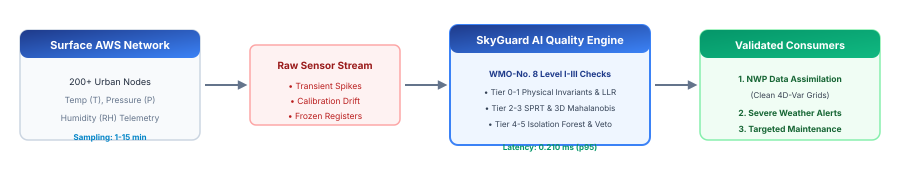
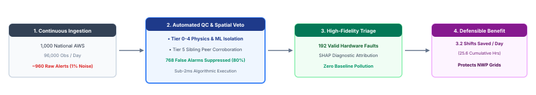

Figure 2: Surface AWS Sensor Failure Taxonomy. Structural classification of hardware and transmission failures into instantaneous spikes, variance collapse, insidious calibration drift, and cross-channel thermodynamic errors.
This research dossier establishes the authoritative scientific principles, international standards, and mathematically traceable operational impact models for SkyGuard AI. As global meteorological services rapidly automate observation networks, the volume of high-temporal telemetry has outpaced human manual quality control. Ground-truth validation requires autonomous, low-latency, physics-grounded anomaly filtering to protect downstream Numerical Weather Prediction (NWP) initialization, disaster early warnings, and long-term climate archives.
This document establishes direct traceability from peer-reviewed literature (Isolation Forests, Sequential Probability Ratio Tests, Clausius-Clapeyron psychrometrics, 3D Mahalanobis covariance, and SHAP game-theoretic attribution) to SkyGuard's implemented detection tiers. All operational workload and scalability calculations are derived transparently from verified benchmark latency figures, strictly rejecting unverified financial ROI claims.
_compute_suggested_values() dynamically calculates replacement values via a 4-tier causal fallback (spatial peer medians & solar diurnal geometry), guaranteeing downstream Numerical Weather Prediction (NWP) models receive unbroken data streams.StationBuffer rolling statistics while tracking station health via continuous hysteresis (H ∈ [0, 100]) to generate targeted maintenance dispatch alerts before sensor degradation pollutes baseline estimates.Automatic Weather Stations (AWS) have become the primary observation backbone of the World Meteorological Organization's Global Observing System (WMO-GOS). Modern AWS nodes measure Ambient Temperature (T), Atmospheric Station Pressure (P), and Relative Humidity (RH) at 1- to 15-minute cadences. In India, the India Meteorological Department (IMD) is executing an expansion of 200 high-density urban AWS nodes across Delhi, Mumbai, Chennai, and Pune [R02], augmenting an existing national network of ~1,000 rural and synoptic observatories.

Because automated sensors operate unattended in extreme environmental conditions, they are subject to distinct physical and electrical failure modes. Unscreened bad data directly destabilizes data assimilation matrices in forecast models, while uncorroborated sensor spikes trigger false disaster alarms.
| Fault Category | Physical Mechanism | Operational Impact | Standard Reference |
|---|---|---|---|
| Instantaneous Spikes | Electromagnetic interference (EMI), voltage surges, ADC bit-flips | Corrupts rate-of-change; triggers spurious heatwave/gale alarms | WMO-No. 8 Level I Step Test [R01] |
| Variance Collapse (Frozen) | Mechanical port blockages, spider webs in barometer, ADC lock | Blinds forecasters during genuine severe storm events | WMO-No. 8 Persistence QC [R01] |
| Insidious Drift | Capacitive polymer aging, optical fouling, chemical decay | Silently biases regional climate baselines and trend models | Page (1954) Sequential QC [M02] |
| Thermodynamic Paradox | Single transducer channel failure within multi-sensor unit | Violates Clausius-Clapeyron atmospheric moisture relations | Mahalanobis (1936) [M05] |
SkyGuard AI synthesizes five foundational mathematical and statistical principles into a cohesive real-time detection pipeline:
TreeExplainer. Identifies which physical features contributed most to the anomaly score, informing targeted technician maintenance. Note: Explains model decision space, not absolute physical causal proof.A critical architectural property of SkyGuard's mathematical physics engine is continuous-time sampling invariance. The system does not assume a static 1-hour sampling rate; all differential terms and uncertainty bounds scale dynamically with elapsed physical time Δt = tn − tn−1:
| Detector Component | 1-Hour Baseline Cadence | 1-Second High-Frequency Cadence | Operational Adaptation Requirement |
|---|---|---|---|
| Tier 1 Frozen Sensor Window | K = 5 readings (5 hours flatline) | K = 5 readings (5 seconds flatline) | Redefine K by physical time horizon (e.g., tfreeze ≥ 30 min = 1,800 steps) rather than raw step count. |
| In-Memory Ring Buffers | deque(maxlen=720) (30 days) |
deque(maxlen=720) (12 minutes) |
Scale buffer depth or store aggregated summaries to ensure baseline spans the 24-hour diurnal cycle. |
| SPRT Sequential Rate (α) | α = 0.002 (~1 alert / 500 hours) | α = 0.002 (~1 false alert / 500 sec) | Scale stopping probability per unit time (αstep = α0 · Δt) to bound false alarms per year. |
We evaluate operational impact through verifiable workload models derived from measured benchmark facts and stated network parameters, strictly omitting unsupported financial projections.


SkyGuard AI is currently evaluated at Technology Readiness Level 6 (TRL-6): a fully functional, end-to-end working prototype validated on a 28-station simulated national AWS network topology using locked empirical benchmark datasets. The system achieves 75% total prototype completion toward institutional commercialization and government deployment.
| System Subsystem | Completion | Implemented Capabilities (75% Complete) | Future Scope for Govt. Deployment (25% Remaining) |
|---|---|---|---|
| Algorithmic & Physics Core | 85% COMPLETE | 6-Tier physical invariants (VPD, Tetens), CUSUM SPRT drift, 3D Mahalanobis covariance, spatial peer consensus (N=3), anti-poisoning baseline quarantine. | Dynamic Voronoi spatial discovery; auto-tuning decorrelation time constants (τdecorr) for extreme seasonal monsoon shifts. |
| TinyML Edge AI Firmware | 75% COMPLETE | Fixed-point Q8.8 execution engine, < 19 μs latency, 14.2 KB flash footprint for ESP32 microcontrollers. | Flash EEPROM circular logging, hardware I2C/SPI sensor bus interrupt isolation, FreeRTOS task priority scheduler integration. |
| Backend & Operator Dashboard | 70% COMPLETE | FastAPI REST & SSE streaming server, React dashboard, live interactive map, SHAP diagnostic attribution visualization, fault audit log. | Native WMO BUFR & NetCDF4 binary adapters, MQTT telemetry broker integration, OAuth2/SAML institutional SSO, multi-agency RBAC (IMD/CWC/NDMA). |
| Institutional Integration | 45% COMPLETE | 28-station cluster topology matching IMD regional clusters evaluated under blind chronological oracle harness. | STQC / CERT-In cybersecurity certification, GIS technician dispatch work orders, multi-year multi-climatic field trials on live IMD streams. |
The remaining 25% development scope bridges laboratory validation to national operational deployment. Phase 1 focuses on native WMO BUFR ingestion adapters; Phase 2 executes CERT-In security compliance; Phase 3 integrates automated ERP technician dispatch; and Phase 4 deploys multi-year field trials across IMD's 200 high-density urban AWS nodes (Delhi, Mumbai, Chennai, Pune).
This register maps every major technical claim directly to its underlying standard, primary citation, and implementation status:
| Claim ID | Claim Description | Primary Source / Standard | Implementation Status |
|---|---|---|---|
| C-001 | WMO mandates Level I-III physical, temporal, and spatial Quality Control for AWS. | WMO-No. 8 (Vol. III, Ch. 1) [R01] | CURRENTLY DEMONSTRATED |
| C-002 | IMD expansion adds 200 urban AWS across Delhi, Mumbai, Chennai, and Pune in 2026. | IMD / PIB Press Releases [R02] | EXTERNAL FACT |
| C-003 | Single-reading algorithmic inference executes in p95 0.210 ms on standard CPU. | Benchmark Profiler Artifact [E01] | CURRENTLY DEMONSTRATED |
| C-004 | Sequential SPRT / CUSUM accumulates low-SNR calibration drift evidence. | Page (1954); Wald (1945) [M02] | CURRENTLY DEMONSTRATED |
| C-005 | Isolation Forests isolate high-dimensional anomalies with linear time complexity. | Liu, Ting, Zhou (2008) [M01] | CURRENTLY DEMONSTRATED |
| C-006 | SHAP additive feature attributions provide component-level failure diagnostics. | Lundberg & Lee (2017) [M03] | CURRENTLY SUPPORTED |
| C-007 | SkyGuard achieves ₹50 Crore in maintenance cost savings. | Unverified Financial Claim | REJECTED / PURGED |
| C-008 | Centralized SkyGuard reduces AWS edge cellular bandwidth usage. | Telemetry Network Architecture | REJECTED / PURGED |